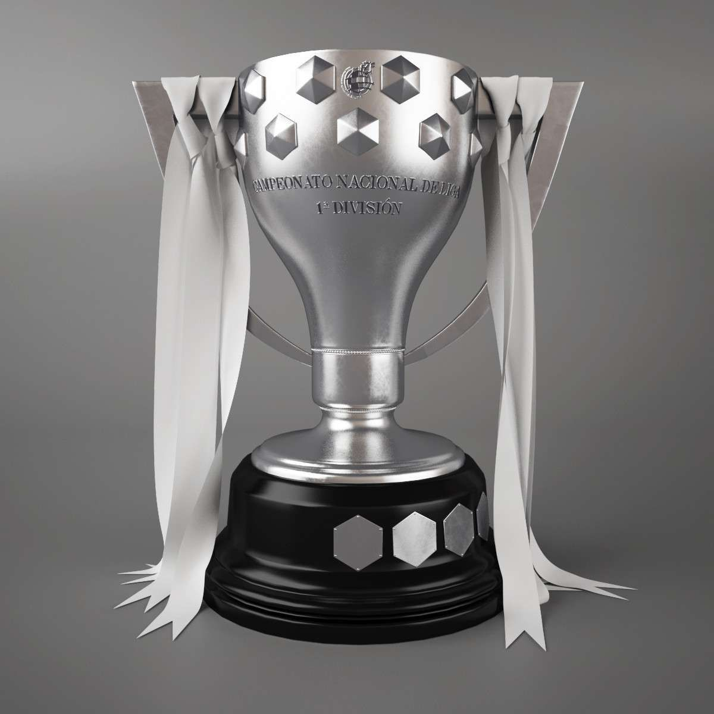

El Real Madrid Club de Fútbol, comúnmente conocido como Real Madrid, es un club de fútbol profesional con sede en Madrid, España. Fue fundado en 1902 y es uno de los clubes de fútbol más exitosos del mundo, habiendo ganado numerosos títulos nacionales e internacionales. Desde pequeño, yo siempre he sido un fanático de este equipo, y he pasado muchos años viendo sus partidos, desde algunos contra el Eibar o el Getafe que no le interesaban a nadie hasta las eliminatorias de Champions, como contra el PSG, Juventus, Bayern o City, que tantas emociones me han provocado, normalmente muy positivas y alegres. Es por estos motivos que esa página web hablará sobre este, el mejor club del mundo, el Real Madrid C.F.
El Real Madrid fue fundado el 6 de marzo de 1902 por un grupo de estudiantes universitarios. Sin embargo, no sería hasta la década de los 40 y 50 que empezaría a cobrar más importancia, tanto en el fútbol español, al ganar varios campeonatos de liga, como en el europeo e internacional. En 1956 ganaría su primera Copa de Europa, la actual Champions. Por este club pasaron diversos jugadores, algunos de los cuales también se mencionan más adelante, tales como Di Stefano, Puskás, Paco Gento, Hugo Sánchez, Amancio, Raúl González Blanco, Ronaldo Nazario, Zidane, Casillas, Cristiano Ronaldo, Sergio Ramos, entre muchos otros. La grandeza del Real Madrid es algo que no tiene ningún otro club, y su longeva historia refuerza aún más esta idea. Hoy en día, el Real Madrid sigue contando con una de las mejores plantillas del mundo, y es el actual campeón de Champions y la Liga española.
El Real Madrid juega en el Estadio Santiago Bernabéu, que tiene una capacidad de 81.044 espectadores. El estadio ha sido el hogar del club desde 1947 y ha sido sede de numerosos partidos importantes, incluyendo finales de la Liga de Campeones de la UEFA y de la Copa Mundial de la FIFA. Algunos de los partidos más destacables de la historia reciente del Real Madrid en este estadio podrían ser las eliminatorias de la Champions de la temporada 21/22 contra el PSG, Chelsea y Manchester City.
Desde hace unos pocos años, el Santiago Bernabéu se encuentra en obras, ya que se pretende remodelar por completo el estadio con el objetivo de mejorar su calidad y hacerlo más moderno y visualmente atractivo. Se estima que, para diciembre de este 2023, las obras hayan finalizado.
El estadio merengue permite realizar un tour por el interior de este, en el que se pueden observar todos los trofeos que ha conseguido el equipo, algunos objetos, como botas, balones o camisetas históricas, los vestuarios, banquillos, gradas y terreno de juego. En el siguiente vídeo se realiza el tour:
Como ya se ha mencionado anteriormente, el Real Madrid es un equipo que ha ganado infinidad de títulos futbolísticos. En la siguiente tabla se pueden observar las tres competiciones más destacadas que ha ganado el club merengue y el número de veces que ha conquistado cada una.
Copas del Rey |
Champions |
Ligas |
|
El Real Madrid ha ganado la Copa del Rey en 19 ocasiones. Esta competición es el segundo torneo de fútbol más importante en España después de la Liga. 
|
El Real Madrid es el equipo con más títulos de Champions, el torneo de fútbol más importante en Europa, teniendo 14 trofeos, seguido del AC Milán, con 7 de estos. 
|
El Real Madrid ha ganado la Liga española en 35 ocasiones, convirtiéndolo en el equipo más exitoso de la historia de la competición.  |